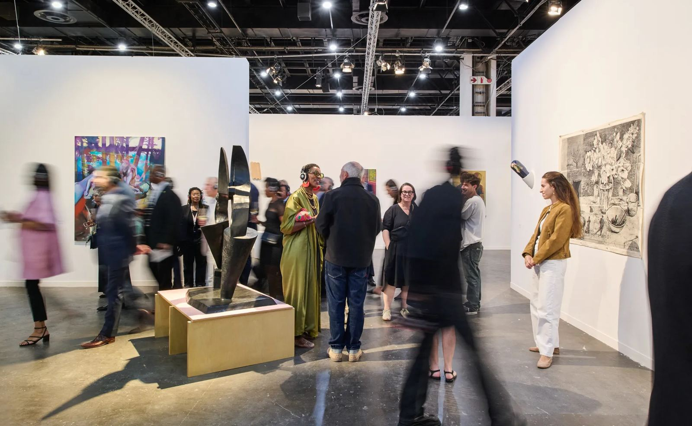

Festivals · Arts
FNB Art Joburg 2027
- Dates
- Dates TBA
- Venue
- Sandton Convention Centre
- Location
- Johannesburg, South Africa
- Format
- In-person
- Category
- Arts
- Industry
- Contemporary art fair
- Organiser
- Art Joburg
- Official website
- https://artjoburg.com/
About
Africa’s leading and longest-running contemporary art fair. Official pages still describe the 19th edition (4–6 September 2026, now past) and say the fair 'will return to Sandton Convention Centre'; no 2027 dates were published on the pages checked. South Africa dates are local (SAST, UTC+2, no daylight saving).
Topics: contemporary art, African art, art fair.
No organiser attendance figure found on the official pages checked (24 Nov 2026). Ranked by an estimated size tier 'medium' (our judgement from format, venue and scale, not an official number).
Sources
Venue
- Sandton Convention Centre — Convention centre · Maude Street, Sandown, 2196 · 10,000 capacity